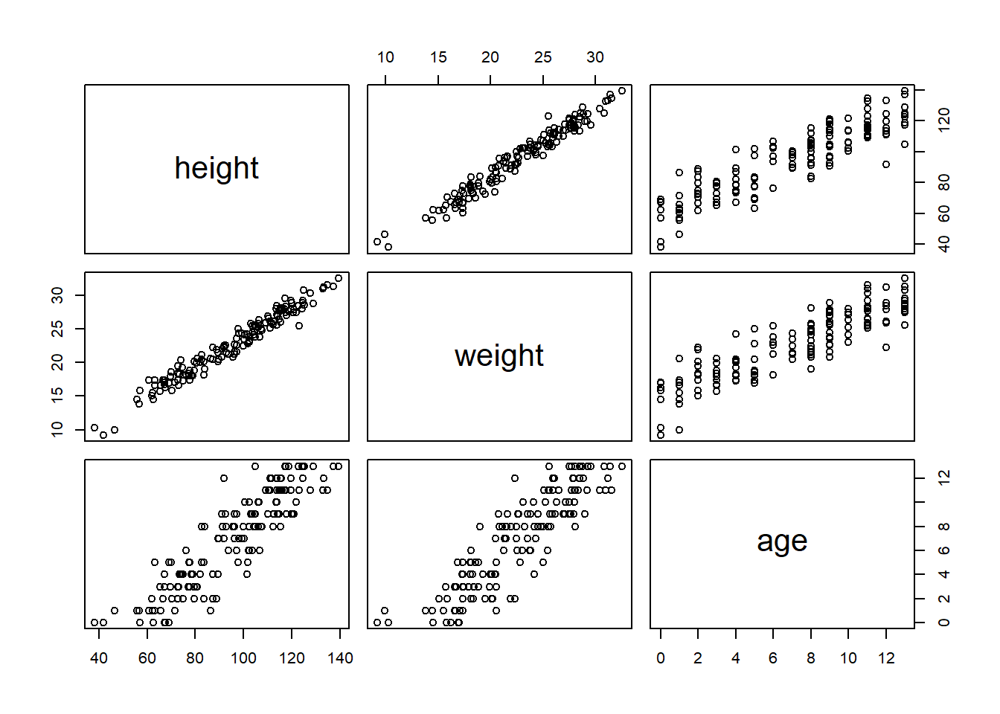
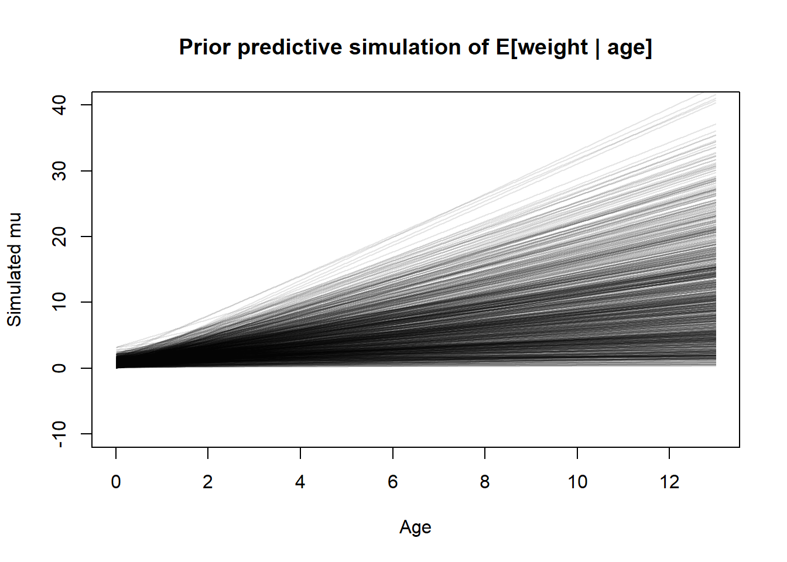
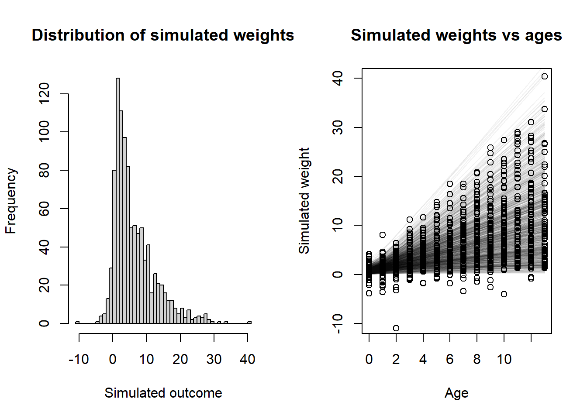
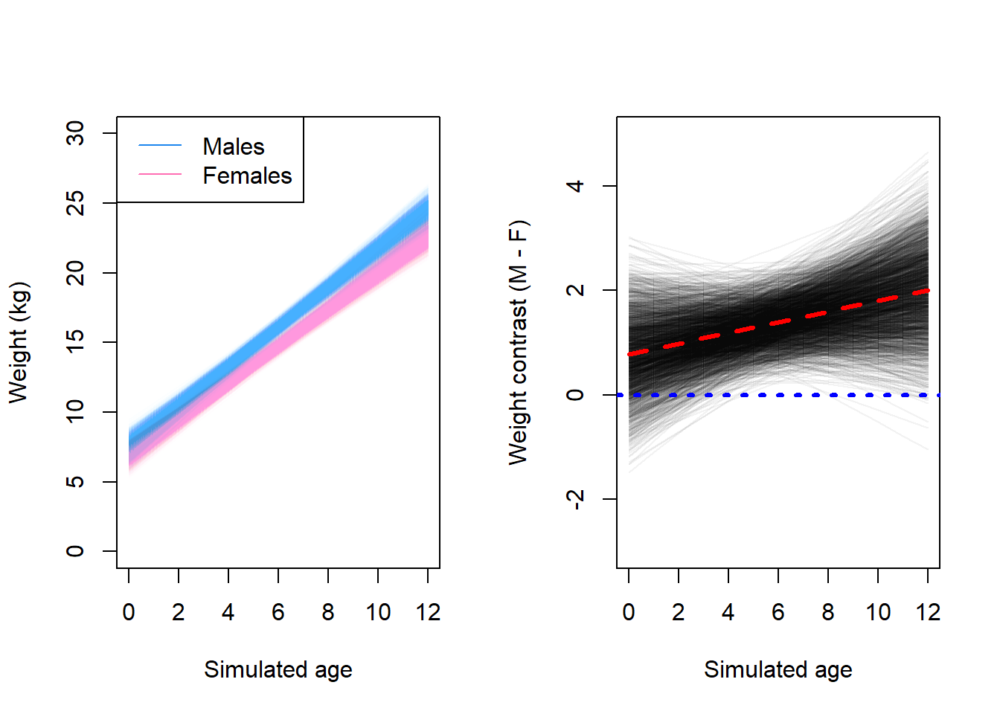

This homework covers the material from Lectures 3 and 4, and the content from book Chapter 4. The questions are reproduced almost identically from Richard McElreath’s original assignment, I did not write them. I only wrote these solutions.
1. From the Howell1 dataset, consider only the people younger than 13 years old. Estimate the causal association between age and weight. Assume that age influences weight through two paths. First, age influences height, and height influences weight. Second, age directly influences weight through age-related changes in muscle growth and body proportions.
Draw the DAG that represents these causal relationships. And then write a generative simulation that takes age as an input and simulates height and weight, obeying the relationships in the DAG.
OK, I will assume that the first paragraph is just an introduction to the homework set and the actual task for this question is in the second paragraph. Here is the DAG for this problem.
# Specify the relationships in the DAGdag <- dagitty::dagitty("dag { age -> height -> weight age -> weight }" )# Specify instructions for plotting the DAG, then do thatdagitty::coordinates(dag) <-list(x =c(age =1, height =2, weight =2),y =c(age =2, height =3, weight =1) )plot(dag)
Now we can write a generative simulation. First, let’s look at the pairwise correlations so we can get sort of an idea of the data distributions and the effects we should simulate.
Ok, so with that plot in mind we see that ages are discrete from 0 to 13, height ranges from about 50 units to 150 units, and weight ranges from about 5 units to 35 units. So our generative simulation should stay within those ranges.
# Set the seed so the simulation makes the same numbers every timeset.seed(101)# This part does the simulation and puts it into a tibble for storagesim <- tibble::tibble(# Just randomly draw an age. In the original data the ages are not# 100% even but I think this is fine.age =sample(0:13, nrow(h1), replace =TRUE),# Height and weight simulations using dag relationships and made up numbers.height =rnorm(nrow(h1), 60+5* age, 10),weight =rnorm(nrow(h1), 3+0.1* age +0.2* height, 1))# Put the columns into the same order for easier comparisons and plotsim <- sim[, c("height", "weight", "age")]pairs(sim)

I just randomly picked these numbers and fiddled with it a bit until the two plots looked similar, and I think I was able to get them pretty close for such a simple simulation using linear effects and normal errors.
2. Use a linear regression to estimate the total causal effect of each year of growth on weight.
Based on the DAG, to obtain the total causal effect of a year of growth (the interpretation of the parameter associated with the independent variable age) we want to use age as the only independent variable in the model. If we controlled for height, the parameter would estimate the direct causal effect of age, but we want the total effect. So the basic structure of our model will look like this. \[\begin{align*}
\text{weight}_i &\sim \text{Normal}(\mu, \sigma) \\
\mu &= \alpha + \beta \cdot \text{age}_i \\
\alpha &\sim \text{Prior}() \\
\beta &\sim \text{Prior}() \\
\sigma &\sim \text{Prior}()
\end{align*}\]
We will need to assign some priors to our data. In general, I tend to prefer weakly informative priors, whereas I think McElreath tends to prefer less broad priors. I’ll base my priors off the default recommended priors from the Stan devs’ prior choice recommendations. Of course they also recommend rescaling all variables before modeling, which I think is a good idea, but I won’t do it here because I’m lazy and I don’t think it’s going to be particularly useful here.
One additional constraint that we have is that the \(\alpha\) and \(\beta\) parameters should both be positive! It doesn’t make sense for someone to shrink as they get older (at least not for ages 0 to 13, maybe for seniors but not here). And it certainly doesn’t make sense for someone to ever have a negative weight, even at age zero. So we’ll use a distribution that has to be positive. I’ll choose a half-normal distribution, which is easy to sample by just taking the absolute value of a random normal sample.
Perhaps we should do a prior predictive check to visualize them before doing anything else.
set.seed(101)pps <- tibble::tibble(a =abs(rnorm(1000, 0, 1)),b =abs(rnorm(1000, 0, 1)),s =rexp(1000, 1) )plot(NULL,xlim =c(0, 13), ylim =c(-10, 40),xlab ="Age", ylab ="Simulated mu",main ="Prior predictive simulation of E[weight | age]")for (i in1:nrow(pps)) {curve( pps$a[i] + pps$b[i] * x,from =0, to =13, n =1000,add =TRUE, col = rethinking::col.alpha("black", 0.1) )}

Well, some of those are way too flat, and some of them are way too steep, but overall I think this encompasses a good range of possibilities. Let’s also look at the prior predictive distribution of the actual outcomes. Here, I’ll take random samples of age from a discrete uniform distribution. That’s probably not the best way to do it but it seems easiest.
# Do the simulationset.seed(102)sim_age <-sample(0:13, 1000, replace =TRUE)sim_y <-rnorm(1000,mean = pps$a + pps$b * sim_age,sd = pps$s)layout(matrix(c(1, 2), nrow =1))# Histogram of all y valueshist( sim_y,xlab ="Simulated outcome",main ="Distribution of simulated weights",breaks ="FD")# Plot showing y vs x with simulated regression lines as wellplot(NULL,xlim =c(0, 13), ylim =c(-10, 40),xlab ="Age", ylab ="Simulated weight",main ="Simulated weights vs ages")for (i in1:nrow(pps)) {curve( pps$a[i] + pps$b[i] * x,from =0, to =13, n =1000,add =TRUE, col = rethinking::col.alpha("black", 0.05) )}points(sim_age, sim_y)

Well, we ended up with a few negative and a few ridiculously large weights, but since we’re just doing a linear regression here I think we can live with that and let the data inform the golem that no one has negative heights. Probably we would want to either change the likelihood function or transform something (e.g. use a log link) to prevent any negative responses, but this will probably wash out in the fitting. So let’s do that.
fit <- rethinking::quap(flist =alist( weight ~dnorm(mu, sigma), mu <- a + b * age, a ~dnorm(0, 1), b ~dnorm(0, 1), sigma ~dexp(1) ),constraints =alist(a ="lower=0",b ="lower=0" ),data =list(weight = h1$weight,age = h1$age ) )
Hmm. Looks like quap does not take a constraints argument the way I thought it did. So I guess we will just have to settle for exponential priors, which like I mentioned, is probably the easiest way (not the best way) to get a strictly positive prior. Let’s redo the prior predictive simulation using this model. \[\begin{align*}
\text{weight}_i &\sim \text{Normal}(\mu, \sigma) \\
\mu &= \alpha + \beta \cdot \text{age}_i \\
\alpha &\sim \text{Exponential}(1) \\
\beta &\sim \text{Exponential}(1) \\
\sigma &\sim \text{Exponential}(1)
\end{align*}\]
layout(matrix(c(1, 2), nrow =1))set.seed(101)pps <- tibble::tibble(a =rexp(1000, 1),b =rexp(1000, 1),s =rexp(1000, 1) )set.seed(102)sim_age <-sample(0:13, 1000, replace =TRUE)sim_y <-rnorm(1000,mean = pps$a + pps$b * sim_age,sd = pps$s)# Histogram of all y valueshist( sim_y,xlab ="Simulated outcome",main ="Distribution of simulated weights",breaks ="FD")# Plot showing y vs x with simulated regression lines as wellplot(NULL,xlim =c(0, 13), ylim =c(-10, 150),xlab ="Age", ylab ="Simulated weight",main ="Simulated weights vs ages")for (i in1:nrow(pps)) {curve( pps$a[i] + pps$b[i] * x,from =0, to =13, n =1000,add =TRUE, col = rethinking::col.alpha("black", 0.05) )}points(sim_age, sim_y)
Yes, this definitely results in a more left-skewed distribution, but I think that is actually good, since we don’t expect a lot of kids to weight 50+ kilograms. So I’m not too pressed about it. Now let’s finally fit the model, for real.
set.seed(101)fit <- rethinking::quap(flist =alist( weight ~dnorm(mu, sigma), mu <- a + b * age, a ~dexp(1), b ~dexp(1), sigma ~dexp(1) ),data =list(weight = h1$weight,age = h1$age ) )rethinking::precis(fit)
mean sd 5.5% 94.5%
a 7.332870 0.35961024 6.758143 7.907596
b 1.354753 0.05438219 1.267840 1.441667
sigma 2.503612 0.14476058 2.272256 2.734967
So our estimate for the total causal effect of age on weight is 1.35. In other words, we would expect that the average individual is born at weight 7.33 units, and increases in weight by 1.35 units each year.
3. Now suppose the causal association between age and weight might be different for boys and girls. Use a single linear regression, with a categorical variable for sex, to estimate the total causal effect of age on weight separately for boys and girls. How do girls and boys differ? Provide one or more posterior contrasts as a summary.
So what we are assuming here is that the effect of age is different for males and females – we’ll also allow the intercept to vary by sex, meaning that males and females can also have a different weight at birth on average. We’ll use a similar model from before other than these changes. \[\begin{align*}
\text{weight}_i &\sim \text{Normal}(\mu, \sigma) \\
\mu &= \alpha_{\text{Sex}_i} + \beta \cdot \text{age}_{\text{Sex}_i} \\
\alpha_{j} &\sim \text{Exponential}(1) \\
\beta_{j} &\sim \text{Exponential}(1) \\
\sigma &\sim \text{Exponential}(1)
\end{align*}\]
So now we will fit the model.
set.seed(103)fit2 <- rethinking::quap(flist =alist( weight ~dnorm(mu, sigma), mu <- a[sex] + b[sex] * age, a[sex] ~dexp(1), b[sex] ~dexp(1), sigma ~dexp(1) ),data =list(weight = h1$weight,age = h1$age,# We have to add 1 for the index coding to work rightsex = h1$male +1 ),start =list(a =c(1, 1), b =c(1, 1), sigma =0.5) )rethinking::precis(fit2, depth =2)
Ok, so I had some issues with the start values here. Probably because the priors are very diffuse, quap sometimes cannot get to the MAP from randomly sampled starting locations. However, I just had to find a seed that works, because it seems to be ignoring the start value for the vector-valued parameters (or I am specifying it incorrectly) in the error messages I get. But this one fit, so let’s go. There appears to be a slight difference between the two slope parameters, but we cannot allow ourselves to be mislead by the table of coefficients. We must compute the contrast distribution to truly understand what is happening here.
Now, in order to understand the differences, we have to construct the contrast distribution.
N <-2500age_vals <-0:12mean_f <- rethinking::link(fit2, data =list("age"= age_vals, "sex"=1),n = N)mean_m <- rethinking::link(fit2, data =list("age"= age_vals, "sex"=2),n = N)mean_contrast <- mean_m - mean_flayout(matrix(c(1, 2), nrow =1))plot(NULL,xlim =c(0, 12), ylim =c(0, 30),xlab ="Simulated age",ylab ="Weight (kg)")for (i in1:N) {lines( age_vals, mean_m[i, ],lwd =1, col = rethinking::col.alpha("dodgerblue2", 0.01) )lines( age_vals, mean_f[i, ],lwd =1, col = rethinking::col.alpha("hotpink1", 0.01) )}legend("topleft", c("Males", "Females"), col =c("dodgerblue2", "hotpink1"),lty =c(1, 1))plot(NULL,xlim =c(0, 12), ylim =c(-3, 5),xlab ="Simulated age",ylab ="Weight contrast (M - F)")for (i in1:N) {lines( age_vals, mean_contrast[i, ],lwd =1, col = rethinking::col.alpha("black", 0.05) )}lines(age_vals, apply(mean_contrast, 2, mean), lwd =3, lty =2, col ="red")abline(h =0, lwd =3, lty =3, col ="blue")

Here, we can observe that the regression lines for males tend to be steeper than the regression lines for females. From the contrast, we can see that most of the time, the effect is positive and the line lies above zero. Let’s compute a posterior interval for the mean.
From the contrast, we can see that men tend to be heavier at nearly all ages. The weight of males and females tends to be closer at birth than on average at older ages.
This contrast is between the estimates of the conditional mean response. To incorporate individual variance into the uncertainty around the estimate, we can also use samples from the posterior of the conditional mean, along with samples from the posterior of the scale parameter to simulate individual responses.
Interestingly, the variance tends to be quite large. However, as we see from the plot on the left, we could probably use a better variance structure for this model. If each line represents an individual, the spikes over time are unlikely to be this drastic, especially for children. We still see (from the right plot) that a given male is more likely to be heavier than a given female of the same age, but there is a lot of variation between individuals so this will not always be true.
4. The data in data(Oxboys) are growth records for 26 boys measured over 9 periods. I want you to model their growth. Specifically, model the increments in growth from one Occassion to the next. Each increment is simply the difference between height in one occasion and height in the previous occasion. Since none of these boys shrunk during the study, all of the growth increments are greater than zero. Estimate the posterior distribution of these increments. Constrain the distribution so it is always positive – it should not be possible for the model to think that boys can shrink from year to year. Finally computer the posterior distribution of the total growth over all 9 occasions.
From the data documentation, we see that age and Occasion basically represent the same thing, so I’ll ignore age for now. I think for this model, we don’t even need to draw a DAG as there are only two variables we really care about.
The first thing I’ll do is the necessary data processing. We want to get the increments in growth by subtracting the previous measurement from each height value. This will give us the amount of growth in between each measurement. Note that this will reduce us from 9 total measurements per boy to 8 total differences per boy, because there is nothing to subtract from the first measurement.
There is definitely some variance in each increment, so I think it makes sense to use a model that looks like this \[\begin{align*}
\text{Increment}_i &\sim \text{Lognormal}(\mu, \sigma) \\
\mu &= \alpha_{\text{Period}_i} \\
\alpha &\sim \text{Normal}(0, k) \\
\sigma &\sim \text{Exponential}(10)
\end{align*}\]
McElreath also chose to constrain the alpha parameters to all be the same, which I think is fine and makes the model much simpler. But since we were interested in the posterior distribution of their sum anyways, I prefer to leave the model like this anyways. Besides, from the histogram we saw that some of them were different – I’m not sure if this is a good biological assumption or not though since I don’t really know enough about this problem.
where increment is the difference, and period is the same as occasion minus 1. We still need to choose \(k\). Since we have a lognormal distribution, the variance parameter should be biased to be small (untuitively we do this by making the exponential parameter larger) or else when we do the log part, the means will get really big. This is also true for \(k\), which I decided to simulate instead of just picking to be big.
Note that I originally used a normal regression with a lognormal prior, but I read McElreath’s solution and decided to update this to use a lognormal regression with a normal prior, which I think is actually much better. If you use a Gaussian model for this, you run the risk of randomly getting growth increments from the model that are negative, which we specifically wanted to avoid in this problem.
So the increment over the first period is the difference between the second height measurement and the first height measurement. (I also think that this is what the problem is asking for.)
If we use period as an index variable, we could also include an “overall” intercept, but we don’t really need to (the models are computationally equivalent parametrizations). Sometimes adding the overall intercept makes the model run better, or so I’ve heard, but I’ll ignore it for now.
I choose a standard exponential prior on sigma, but for each alpha I choose a lognormal prior. This also constrains the effect of each increment to be strictly positive, but prefers a moderate effect rather than having most of the weight near zero. In order to choose the variance constant \(k\) that I wrote in above as a placeholder, I think it might be best to do a small prior predictive simulation. I’ll just simulate one increment, since the model will allow them to be different regardless.
I probably should have done this before looking at the data, but I think for now it will be OK. We want to choose a diffuse prior, but not one that produces insane results.
set.seed(2323)k <-c(0.05, 0.1, 0.25, 0.5, 1, 1.5) # Values to tryN <-1000# Number of simulations# Create a container for the outputpps <-matrix(nrow = N, ncol =length(k))# Do the simulationfor (i in1:length(k)) { pps[, i] <-rlnorm(N, rnorm(N, 0, k[i]), rexp(N, 10))}# Make a plotlayout(matrix(1:length(k), nrow =2, byrow =TRUE))for (i in1:length(k)) {hist(pps[, i], breaks ="FD", main =paste("k =", k[i]), xlab =NULL)}
Wow, I forgot how hard it is to choose parameters for a lognormal prior. That scaling parameter really starts to act up quickly. So for this problem, I’ll choose \(k=0.5\) since it creates a prior that, in general, constrains our values to what seems “reasonable” but also allows the parameter to get large if it needs to, due to the tail of the distribution.
So to recap before we fit, our final model will be this. \[\begin{align*}
\text{Increment}_i &\sim \text{Normal}(\mu, \sigma) \\
\mu &= \alpha_{\text{Period}_i} \\
\alpha &\sim \text{Lognormal}(0, 0.5) \\
\sigma &\sim \text{Exponential}(10)
\end{align*}\]
Okay, so we can see that all of the parameters are in the same sort of neighborhood, but they definitely appear to be somewhat different. However! Recall that we cannot allow ourselves to stare into the void and be mislead. We shall first visualize the posterior distributions of these parameters.
set.seed(1344134)post <-extract.samples(fit_ob)mn <-apply(post$a, 2, mean)pi <-apply(post$a, 2, rethinking::PI)layout(matrix(1:8, nrow =2, byrow =TRUE))for (i in1:ncol(post$a)) {# Blank plotplot(NULL,xlim =c(-1.5, 1.5), ylim =c(0, 4.5),xlab =paste("Increment", i, "effect (cm)"),ylab ="Density",xaxs ="i", yaxs ="i",cex.lab =1.5,cex.axis =1.5 )# Mean and 89% PIabline(v = mn[i], col ="red", lty =2, lwd =2)abline(v = pi[1, i], col ="red", lty =2)abline(v = pi[2, i], col ="red", lty =2)# Density curve rethinking::dens(post$a[, i], add =TRUE, lwd =3)}# Common titlemtext(paste("Posterior distributions of individual increment effects","(mean and 89% posterior interval)",sep ="\n" ),side =3,line =-3,outer =TRUE,cex =1.1 )
Again, we must be careful not to make any undue comparisons here. These summaries are fine for thinking about individual effects, but it does not make sense to compare them across parameters. So now we shall compute the contrast of interest. We can get the posterior of the total growth by creating a contrast across each of the growth increments. Of course this contrast will look like \(c^{\mkern-1.5mu\mathsf{T}} = \langle 1, 1, \ldots, 1 \rangle\) because we will just be adding up the samples.
layout(1)# Sample the growth increments from the posterior# and then add them upcontrast <-sapply(1:1000, \(i) sum(rlnorm(8, post$a[i, ], post$sigma[i])))contrast_mean <-mean(contrast)plot(NULL,xlim =c(0, 30),ylim =c(0, 0.18),xlab ="Sum of growth increments (cm)",ylab ="Density",xaxs ="i", yaxs ="i",cex.axis =1.25,cex.lab =1.1,tcl =-0.25)plot_dens <-density(contrast, adjust =0.5)for (i inc(67, 89, 95, 99) /100) {shade(plot_dens, PI(contrast, prob = i))}lines(x =rep(contrast_mean, 2),y =c(0, plot_dens$y[which.min(abs(plot_dens$x - contrast_mean))]),lty =2, lwd =2)rethinking::dens(contrast, lwd =3, add =TRUE)
Here the dashed line shows the posterior mean. The dashed line shows the posterior mean, and the shaded regions show equal-tailed credible intervals. From darkest to lightest, the coverage for the CIs are, respectively: 67%, 89%, 95%, 99%.
I think we should also probably do this and include the individual-level variance (the estimated sigma parameter), but for right now I’ll call it a day. We can see that the mean total growth was most likely to be 13 cm over the nine occasions, although a range of values from around 12 to 14 were also quite plausible.
This looks quite similar to McElreath’s solution where the alpha for each increment is required to be the same, with one major difference. The slope of the density is much more gradual to the left of the mean in my estimated distribution. This could be sampling variation, or it could be that one (or more) of the increments is typically smaller than the others in this population, and drags down the overall average parameter value when they are constrained to be the same.